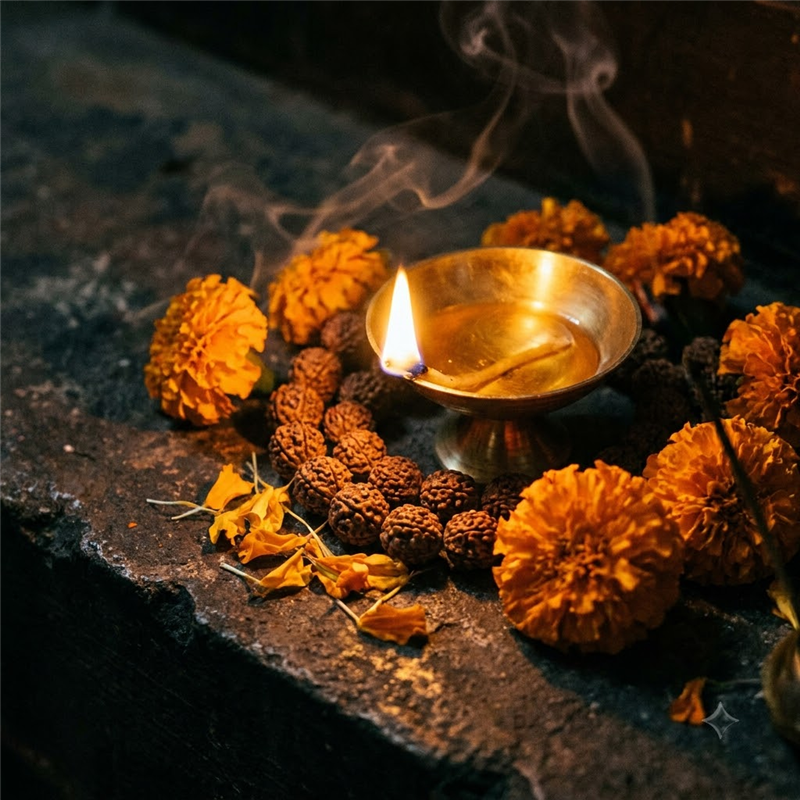

Best Tantrik in Mayong, Assam
Experience the ancient, authentic spiritual remedies of Mayong with the region's most trusted practitioner.
The Ancient Power of Mayong
Mayong, the historical capital of magic and mysticism in Assam, is renowned worldwide for its deep spiritual traditions. However, finding genuine guidance here can be challenging. Deepak Tantrik is widely regarded as the best tantrik in Mayong due to his deep ancestral roots and unparalleled expertise in these ancient sciences.
Serving the people of Mayong and beyond for decades, Deepak Tantrik ensures that the sacred power of Mayong is used solely for the betterment of lives. Whether you are dealing with unsolvable relationship crises, sudden business downfalls, or the heavy burden of negative energies, his Mayong-specific rituals provide fast and permanent relief.
Connect with the pure spiritual essence of Assam. Contact Deepak Tantrik today for a confidential consultation and step out of the darkness and into a peaceful, prosperous life.

The Most Authentic Tantrik in Kamakhya & Mayong
Whether you are searching for the best tantrik in kamakhya or the ultimate best mayong tantrik, Deepak Tantrik bridges the ancient powers of both sacred lands. Born in the mystical lands of Mayong�often depicted in the mayong assam black magic video documentaries as the heart of Indian magic�he inherited centuries-old secrets. He later established his deep spiritual practice at the Kamakhya Temple, making him the most sought-after tantrik in kamakhya temple. People from all over the world seek his mayong tantrik contact number for guaranteed results.
He specializes in kamakhya temple black magic removal and positive vashikaran. For those looking to learn about kamakhya temple and its genuine healers, Deepak Tantrik stands as the pillar of authenticity. As the leading tantrik in guwahati, his dual-presence as a mayong assam tantrik ensures that you receive the most potent remedies. Connect with the best tantrik in guwahati today and transform your life. Here, every assam tantrik ritual is performed with pure intent.
Mayong � The Land Where Magic Was Born
Every person who has watched a mayong assam black magic video understands that Mayong is not just a village�it is a living, breathing archive of India's most powerful occult knowledge. The mayong assam tantrik tradition is spoken of with reverence across India and South East Asia. Ancient texts, passed orally for centuries and later inscribed on palm leaves, describe rituals of transformation, healing, and protection that modern science cannot explain. As the most authentic mayong tantrik alive today, Deepak Tantrik is the keeper of this tradition.
His mayong tantrik contact is sought by people from Delhi, Mumbai, Kolkata, and even abroad. When you dial the mayong tantrik contact number listed on this page, you are connecting directly with a lineage that stretches back over 500 years. There are no middlemen, no false promises�only the pure, ancient power of Mayong.
From Mayong to Kamakhya: A Sacred Journey
What makes Deepak Tantrik unique among all assam tantrik practitioners is his combined authority. Born and trained in Mayong (the mayong assam tantrik contact number you find here belongs to an authentic practitioner), he later moved to Guwahati to deepen his practice at the Kamakhya Temple. This rare combination makes him the undisputed best mayong tantrik AND the supreme tantrik in guwahati. Whether your problem is love, marriage, business, or spiritual attack�he has the remedy.